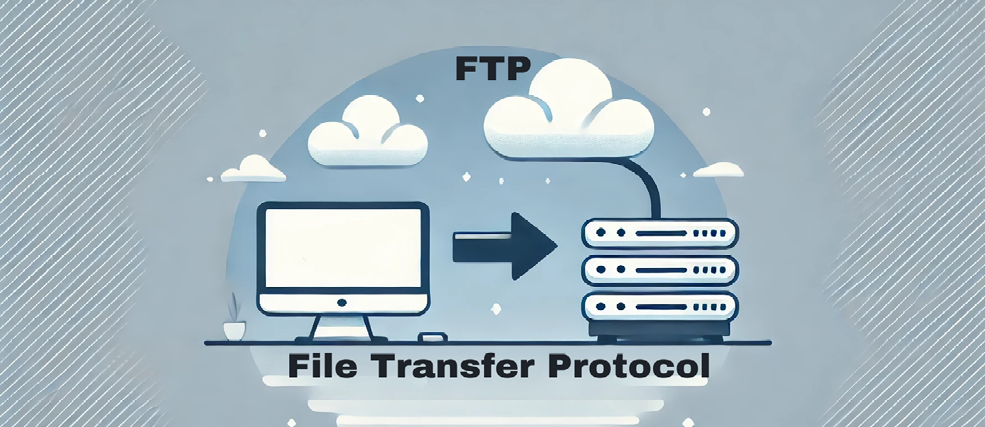
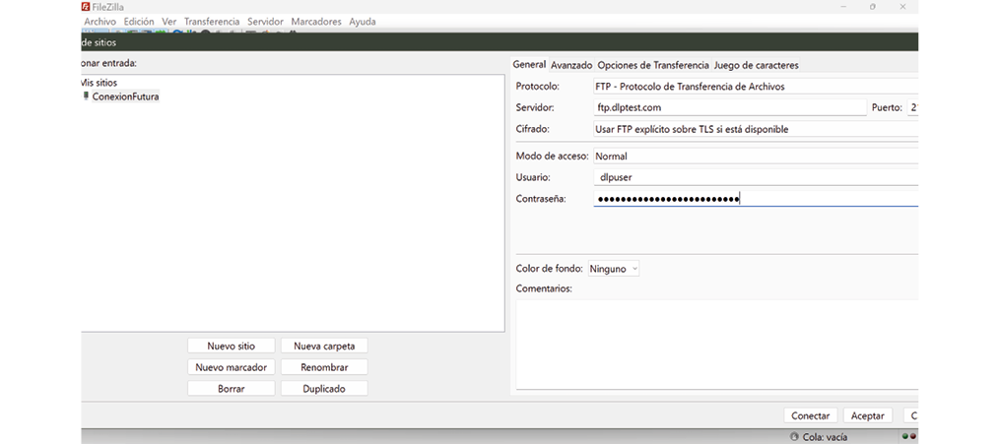
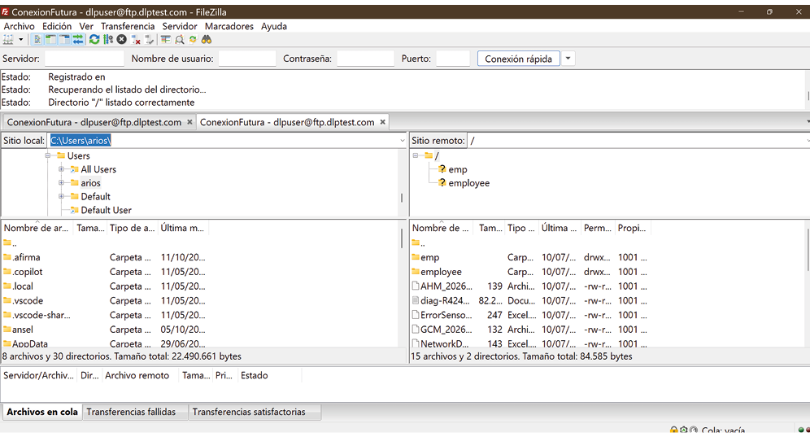

SERVIDOR REMOTO
Unidad Didáctica 2. Herramientas de transferencias de archivos
Publicación de páginas web (MF0952_2)
Módulo formativo:
Actividad 2 Caso práctico.
Alumno: Alfonso Rubio Rioseras
Fecha: Julio 2026
1. Accede a la página oficial de Filezilla (https://filezilla-project.org/) y descarga la versión adecuada para tu sistema operativo.
2. .Instala y ejecuta Filezilla en tu equipo.
3. Conecta al servidor público de Tele2 para pruebas.
Datos de conexión:
Dirección: ftp.speedtest.tele2.net
Puerto: 21
Usuario: anonymous
Contraseña: (dejar en blanco o usar correo electrónico)
a) Describe detalladamente cómo configuraste la conexión rápida en Filezilla para conectarte al servidor. ¿Qué opciones elegiste y por qué?
Para establecer una conexión rápida en FileZilla es necesario utilizar la barra denominada “Conexión rápida”, situada en la parte superior de la ventana principal del programa. Esta opción permite conectarse a un servidor FTP sin necesidad de guardar previamente la configuración en el Gestor de Sitios, siendo especialmente útil para conexiones ocasionales o pruebas de acceso.
El primer campo que debe completarse es el Servidor (Host), donde se introduce el nombre del dominio o la dirección IP del servidor FTP al que se desea acceder, por ejemplo ftp.ejemplo.com o 192.168.1.100. A continuación, en el campo Nombre de usuario (Username), se escribe la cuenta proporcionada por el administrador del servidor. En el campo Contraseña (Password) se introduce la clave correspondiente, mientras que el campo Puerto (Port) puede dejarse vacío para utilizar el puerto predeterminado 21, o especificarse manualmente si el servidor utiliza un puerto diferente.
Una vez introducidos estos datos, se pulsa el botón “Conexión rápida” para que FileZilla establezca la comunicación con el servidor. Durante el proceso, el programa realiza la autenticación del usuario y, si las credenciales son correctas, muestra el contenido del servidor remoto en el panel derecho de la interfaz. Desde ese momento es posible transferir archivos mediante arrastrar y soltar o utilizando las opciones del menú contextual.
Cada uno de estos parámetros tiene una función específica.
El Servidor identifica el equipo remoto al que se realizará la conexión; el Nombre de usuario y la Contraseña permiten autenticar al usuario y controlar los permisos de acceso; y el Puerto determina el canal de comunicación que utilizará el servicio FTP. Cuando el servidor emplea el puerto estándar 21, no es necesario especificarlo, aunque puede ser imprescindible en configuraciones personalizadas.
Aunque la conexión rápida resulta sencilla y eficaz, presenta algunas limitaciones. No permite configurar opciones avanzadas como el tipo de protocolo (FTP, FTPS o SFTP), el modo de cifrado, el modo de transferencia (activo o pasivo) o claves de autenticación. Por este motivo, para conexiones habituales o que requieran una configuración más completa y segura, es recomendable utilizar el Gestor de Sitios de FileZilla, donde pueden almacenarse todos estos parámetros y reutilizarse en futuras conexiones.
b) ¿Qué mensajes de bienvenida o información inicial muestra Filezilla al establecer la conexión? Explica el significado de los mensajes principales.
Al establecer una conexión con un servidor FTP mediante FileZilla, el programa muestra en la ventana de registro de mensajes una serie de respuestas enviadas por el cliente y el servidor. Estos mensajes permiten comprobar si la conexión se ha realizado correctamente y facilitan el diagnóstico de posibles errores. Cada línea refleja una etapa del proceso de comunicación entre ambos equipos.
Al iniciar la conexión, es habitual que aparezca un mensaje como “Resolviendo la dirección del servidor” (Resolving address), indicando que FileZilla está convirtiendo el nombre del servidor (por ejemplo, ftp.ejemplo.com) en una dirección IP. A continuación, suele mostrarse “Conectando con...” (Connecting to...), lo que significa que el cliente está intentando establecer la comunicación con el servidor utilizando el puerto configurado, normalmente el 21 para FTP.
Una vez establecida la conexión, el servidor responde con un mensaje de bienvenida, identificado generalmente por el código 220. Un ejemplo sería “220 Welcome to FTP Server”, que indica que el servidor está disponible y preparado para aceptar conexiones de clientes. Este mensaje constituye la confirmación de que la comunicación inicial se ha realizado correctamente.
Posteriormente, FileZilla envía el nombre de usuario mediante el comando USER, y el servidor responde habitualmente con el código 331, acompañado de un mensaje como “331 Password required for usuario”. Esto significa que el nombre de usuario ha sido aceptado y que el servidor solicita la contraseña para completar la autenticación. Tras introducirla, si las credenciales son correctas, el servidor responde con el código 230, normalmente acompañado del mensaje “230 Logged on” o “230 User logged in”, indicando que la autenticación ha sido satisfactoria y que el usuario ya tiene acceso al servidor.
Después de la autenticación, FileZilla suele enviar comandos para configurar la sesión. Entre los más habituales se encuentra PWD, que solicita el directorio de trabajo actual, y cuya respuesta suele incluir el código 257, indicando la carpeta en la que se encuentra el usuario. También es frecuente el comando TYPE I, que establece el modo de transferencia binario, recomendado para evitar alteraciones en archivos no textuales, y el comando PASV, que activa el modo pasivo para facilitar la comunicación a través de cortafuegos y routers.
Finalmente, cuando FileZilla obtiene el listado de archivos del servidor, aparecen mensajes como “Listando el directorio...” o “Directory listing successful”, confirmando que el contenido del directorio remoto se ha recuperado correctamente y que el usuario puede comenzar a transferir archivos.
En conjunto, estos mensajes permiten conocer el estado de la conexión en cada momento y resultan fundamentales para identificar problemas de autenticación, conectividad, permisos o configuración del servidor. Su interpretación es una herramienta esencial para la administración y resolución de incidencias en servicios FTP.
c) Navega por el servidor remoto y describe la estructura general de directorios y tipos de archivos que encuentras. ¿Qué utilidad pueden tener estos archivos en un entorno real?
Cuando se accede a un servidor remoto mediante FTP, la estructura de directorios depende de la finalidad del servidor y de los permisos asignados al usuario.
No obstante, en los servidores web es habitual encontrar una organización jerárquica destinada a facilitar la administración de los archivos que componen un sitio web. Normalmente existe un directorio principal, como public_html, htdocs, www o httpdocs, que contiene todos los archivos públicos accesibles desde Internet. Dentro de este directorio suelen existir subcarpetas organizadas por tipo de contenido, como images o img para imágenes, css para hojas de estilo, js para archivos JavaScript, uploads para archivos enviados por los usuarios, media para contenido multimedia y includes para archivos reutilizables del sitio.
En cuanto a los tipos de archivos, es frecuente encontrar documentos HTML que definen la estructura de las páginas web, archivos CSS encargados del diseño y la presentación visual, y archivos JavaScript que proporcionan funcionalidades dinámicas e interactividad. En servidores que utilizan tecnologías del lado del servidor también pueden aparecer archivos PHP, ASP.NET, JSP o similares, responsables de generar contenido dinámico y gestionar la comunicación con bases de datos. Además, suelen almacenarse imágenes en formatos como JPG, PNG, GIF, SVG o WebP, así como documentos PDF, archivos comprimidos (ZIP), vídeos, audios y otros recursos necesarios para el funcionamiento del sitio.
También es habitual encontrar archivos de configuración y mantenimiento. Entre ellos destacan index.html o index.php, que actúan como página principal del sitio; .htaccess, utilizado para configurar reglas del servidor Apache, redirecciones y permisos; robots.txt, que indica a los motores de búsqueda qué contenido deben indexar; y favicon.ico, que contiene el icono identificativo del sitio web. En algunos casos pueden existir archivos de registro (logs), copias de seguridad y documentos de configuración específicos de las aplicaciones instaladas.
En un entorno profesional, cada uno de estos archivos cumple una función esencial. Los archivos HTML, CSS y JavaScript permiten construir la interfaz de usuario; los archivos PHP u otros lenguajes de servidor gestionan la lógica de negocio y el acceso a bases de datos; las imágenes y recursos multimedia mejoran la experiencia del usuario; mientras que los archivos de configuración garantizan el correcto funcionamiento, la seguridad y el posicionamiento del sitio web. Una organización adecuada de los directorios facilita las tareas de mantenimiento, reduce la posibilidad de errores y mejora la escalabilidad del proyecto.
En conclusión, la estructura de directorios de un servidor remoto responde a criterios de organización, seguridad y facilidad de administración. Conocer la función de cada carpeta y de los distintos tipos de archivos resulta fundamental para gestionar correctamente un servidor web, realizar tareas de mantenimiento y garantizar un funcionamiento eficiente y seguro de las aplicaciones alojadas.
d) Elige un archivo cualquiera disponible en el servidor y explica cómo lo transferiste a tu equipo. Indica qué indicadores o señales te confirmó Filezilla durante la transferencia.
La transferencia de un archivo mediante FileZilla se realiza estableciendo previamente una conexión con el servidor FTP y seleccionando el archivo que se desea enviar o descargar. Para subir un archivo al servidor, el usuario navega por el panel izquierdo, que muestra los archivos del equipo local, y localiza la carpeta de destino en el panel derecho, correspondiente al servidor remoto.
La transferencia puede iniciarse arrastrando el archivo desde el panel local al remoto o haciendo clic con el botón derecho del ratón y seleccionando la opción “Subir”. De forma análoga, para descargar un archivo desde el servidor al equipo local se utiliza la opción “Descargar” o el método de arrastrar y soltar en sentido inverso.
Durante el proceso de transferencia, FileZilla proporciona diversos indicadores que permiten conocer el estado de la operación. En la parte inferior de la ventana aparece la cola de transferencia, donde se muestra el nombre del archivo, su tamaño, la velocidad de transferencia, el porcentaje completado, el tiempo transcurrido y el tiempo estimado para finalizar la operación. Estos datos permiten comprobar que la transferencia se está realizando correctamente y supervisar su rendimiento.
Además, en la ventana de registro de mensajes se muestran las respuestas intercambiadas entre el cliente y el servidor. Es habitual observar mensajes como “Iniciando transferencia del archivo”, seguidos por los códigos de respuesta del servidor. Al finalizar correctamente, FileZilla muestra mensajes como “Transferencia completada correctamente” o “File transfer successful”, junto con el código 226 (Closing data connection), que indica que el servidor ha cerrado la conexión de datos después de completar satisfactoriamente la transferencia del archivo.
Finalmente, el archivo desaparece de la cola de transferencias activas y pasa al apartado “Transferencias satisfactorias”, confirmando que el proceso ha concluido sin errores. Si se produce algún problema, el archivo aparecerá en la sección “Transferencias fallidas”, acompañado de un mensaje explicando la causa del error, como falta de permisos, pérdida de conexión o espacio insuficiente en el servidor.
En conjunto, la barra de progreso, la cola de transferencias, la velocidad de envío o descarga, los mensajes del registro y el código de respuesta 226 constituyen los principales indicadores que utiliza FileZilla para confirmar que un archivo ha sido transferido correctamente entre el equipo local y el servidor remoto. Estos elementos permiten al usuario verificar el éxito de la operación e identificar rápidamente cualquier incidencia que pueda surgir durante el proceso.
e) Explica cómo se puede configurar una conexión guardada en Filezilla, indicando qué datos son imprescindibles para que se pueda conectar correctamente en sesiones futuras.
Una conexión guardada en FileZilla se configura mediante el Gestor de Sitios, una herramienta que permite almacenar los datos de acceso a un servidor para reutilizarlos en futuras sesiones sin necesidad de introducirlos cada vez. Esta opción resulta especialmente útil cuando se trabaja de forma habitual con uno o varios servidores, ya que facilita la conexión y reduce la posibilidad de cometer errores al introducir los parámetros manualmente.
Para crear una conexión guardada, se abre el Gestor de Sitios desde el menú Archivo → Gestor de Sitios o pulsando el primer icono de la barra de herramientas. A continuación, se selecciona Nuevo sitio y se asigna un nombre descriptivo a la conexión, por ejemplo, Servidor Web Empresa. Después se introducen los datos de configuración necesarios para establecer la comunicación con el servidor.
Los datos imprescindibles para que la conexión funcione correctamente son los siguientes:
Servidor (Host): nombre de dominio o dirección IP del servidor FTP (por ejemplo, ftp.midominio.com).
Protocolo: seleccionar el protocolo adecuado, normalmente FTP, SFTP o FTPS, según el servicio ofrecido por el servidor.
Puerto: el puerto utilizado por el servicio. Habitualmente es el 21 para FTP, el 22 para SFTP y el 990 para FTPS implícito, aunque algunos servidores utilizan puertos personalizados.
Tipo de acceso: normalmente se elige Normal, aunque también existen opciones como Anónimo, Solicitar contraseña, Interactivo o Cuenta.
Nombre de usuario: cuenta autorizada para acceder al servidor.
Contraseña: clave asociada al usuario para completar la autenticación.
Además de estos parámetros básicos, FileZilla permite configurar opciones avanzadas, como el modo de transferencia (activo o pasivo), el directorio remoto inicial, el directorio local predeterminado, la codificación de caracteres, los tiempos de espera y otras preferencias específicas del servidor. Estas opciones no siempre son obligatorias, pero pueden mejorar la compatibilidad y el rendimiento de la conexión.
Una vez guardada la configuración, bastará con abrir el Gestor de Sitios, seleccionar el servidor almacenado y pulsar Conectar. FileZilla recuperará automáticamente todos los parámetros guardados, estableciendo la conexión sin necesidad de volver a introducir los datos.
En conclusión, guardar una conexión en FileZilla simplifica el acceso a servidores utilizados con frecuencia, mejora la productividad y reduce los errores de configuración. Para garantizar una conexión correcta en futuras sesiones es imprescindible almacenar, como mínimo, la dirección del servidor, el protocolo, el puerto, el tipo de acceso, el nombre de usuario y la contraseña, verificando además que dichos datos se mantengan actualizados y sean compatibles con la configuración del servidor remoto.
INTRODUCCIÓN
En esta actividad vas a practicar la transferencia de archivos mediante clientes FTP,
usando servidores públicos fiables y actualizados para garantizar la accesibilidad.
Trabajarás con Filezilla, un cliente FTP gráfico, y también con la consola para
familiarizarte con el modo texto. Más allá de la ejecución, deberás analizar y explicar los
procesos, comandos y posibles problemas para afianzar tu comprensión
PREGUNTAS/ACTIVIDADES A REALIZAR
Parte 1: Cliente FTP gráfico (Filezilla)
Instrucciones:
2 .Responde a las siguientes cuestiones:
Parte 2: Configuración de conexión guardada
1. Configura en Filezilla una conexión guardada con los siguientes datos:
Nombre de la conexión: ConexionFutura
Dirección: ftp.dlptest.com
Puerto: 21
Usuario: dlpuser
Contraseña: rNrKYTX9g7z3RgJRmxWuGHbeu


Para crear una conexión guardada en FileZilla es necesario utilizar el Gestor de Sitios, una herramienta que permite almacenar la configuración de uno o varios servidores para acceder a ellos de forma rápida y segura en futuras sesiones.
El primer paso consiste en abrir FileZilla y acceder al menú Archivo → Gestor de Sitios (File → Site Manager), o pulsar el icono correspondiente situado en la barra de herramientas. Una vez abierto el Gestor de Sitios, se hace clic en el botón Nuevo sitio y se asigna un nombre identificativo a la conexión, por ejemplo, Servidor Web o FTP Empresa.
A continuación, se introducen los datos necesarios para establecer la conexión:
Servidor (Host): dirección IP o nombre del servidor (por ejemplo, ftp.midominio.com).
Protocolo: seleccionar FTP, SFTP o FTPS, según el tipo de servidor.
Puerto: normalmente 21 para FTP, 22 para SFTP o el puerto indicado por el administrador.
Cifrado: elegir la opción correspondiente al servidor. Si se utiliza FTP tradicional, puede seleccionarse “Usar FTP explícito sobre TLS si está disponible” cuando el servidor lo soporte para mejorar la seguridad.
Tipo de acceso: generalmente Normal.
Usuario: nombre de la cuenta de acceso.
Contraseña: clave asociada al usuario.
De forma opcional, es posible configurar parámetros adicionales como el directorio local y remoto predeterminado, el modo de transferencia (activo o pasivo), el límite de conexiones simultáneas o la codificación de caracteres. Estas opciones permiten adaptar la conexión a las necesidades del servidor y mejorar su funcionamiento.
Una vez completada la configuración, se pulsa el botón Conectar para verificar que todos los datos son correctos. Si la conexión se establece correctamente, FileZilla guardará automáticamente la configuración en el Gestor de Sitios, permitiendo reutilizarla en cualquier momento sin volver a introducir los datos.
En futuras sesiones, únicamente será necesario abrir el Gestor de Sitios, seleccionar la conexión guardada y hacer clic en Conectar. Esto agiliza el acceso al servidor, reduce errores de configuración y facilita la administración de varios servidores desde una única aplicación.
b) Durante la conexión, ¿qué mensajes o avisos relevantes se muestran en el registro de Filezilla? Interpreta su significado
Durante una conexión FTP, FileZilla muestra en la ventana de Registro de mensajes todas las operaciones que realiza el cliente y las respuestas enviadas por el servidor.
Estos mensajes permiten conocer el estado de la conexión, identificar posibles errores y comprobar que la autenticación y la transferencia de archivos se realizan correctamente. La interpretación de estos mensajes resulta fundamental para el diagnóstico y la administración de un servidor FTP.
Al iniciar la conexión, suelen aparecer mensajes como “Resolviendo la dirección del servidor” (Resolving address) y “Conectando con...” (Connecting to...). Estos indican que FileZilla está convirtiendo el nombre del servidor en una dirección IP y estableciendo la comunicación con el servidor remoto mediante el puerto configurado.
Una vez establecida la comunicación, el servidor responde normalmente con el código 220, acompañado de un mensaje como “220 Service ready for new user” o “220 Welcome to FTP Server”. Este código significa que el servidor está disponible y preparado para aceptar conexiones de clientes.
A continuación, FileZilla envía el nombre de usuario mediante el comando USER. Si el servidor reconoce la cuenta, responde con el código 331, generalmente acompañado del mensaje “331 Password required”, indicando que el usuario es válido pero que aún es necesario introducir la contraseña para completar la autenticación.
Después de enviar la contraseña mediante el comando PASS, el servidor responde con el código 230, normalmente acompañado del mensaje “230 Logged on” o “230 User logged in”. Este es uno de los mensajes más importantes, ya que confirma que la autenticación se ha realizado correctamente y que el usuario dispone de acceso al servidor.
Durante la configuración de la sesión pueden aparecer otros mensajes habituales, como:
PWD (Print Working Directory): solicita el directorio de trabajo actual. El servidor responde normalmente con el código 257, indicando la carpeta en la que se encuentra el usuario.
TYPE I: establece el modo de transferencia binario, recomendado para archivos ejecutables, imágenes, vídeos o documentos comprimidos.
PASV (Passive Mode): activa el modo pasivo de conexión, utilizado para facilitar la comunicación cuando existen cortafuegos o routers intermedios.
Cuando se solicita el contenido de una carpeta, aparecen mensajes como “Listando directorio...”, seguidos de respuestas como 150 Opening data connection y posteriormente 226 Transfer complete. El código 150 indica que el servidor ha abierto el canal de datos para enviar la información, mientras que el código 226 confirma que la operación ha finalizado correctamente y que la conexión de datos se ha cerrado de forma satisfactoria.
Si se produce algún problema, FileZilla también muestra mensajes de error que facilitan la identificación de la causa. Por ejemplo:
530 Login incorrect: el nombre de usuario o la contraseña son incorrectos.
550 Permission denied o 550 File unavailable: el usuario no tiene permisos suficientes o el archivo solicitado no existe.
425 Can’t open data connection: el servidor no puede establecer la conexión de datos, normalmente debido a problemas con el cortafuegos o la configuración del modo activo/pasivo.
421 Service not available: el servidor ha cerrado la conexión o el servicio FTP no está disponible temporalmente.
En conjunto, el registro de FileZilla ofrece información detallada sobre todas las fases de la conexión FTP.
La interpretación de los códigos de respuesta y de los mensajes informativos permite comprobar el estado de la comunicación, verificar el éxito de las operaciones y localizar rápidamente cualquier incidencia relacionada con la autenticación, la conectividad, los permisos o la transferencia de archivos.
2 Responde:
a) Explica los pasos que seguiste para crear esta conexión guardada en Filezilla.
c) Supón que la conexión falla. Describe al menos tres posibles causas relacionadas con la configuración y cómo las solucionarías.
Cuando una conexión FTP falla en FileZilla, el problema suele estar relacionado con una configuración incorrecta del cliente o del servidor. Identificar la causa mediante los mensajes del registro permite aplicar la solución adecuada y restablecer la comunicación.
Una de las causas más frecuentes es la introducción incorrecta de las credenciales de acceso. Si el nombre de usuario o la contraseña son erróneos, el servidor responde normalmente con el código 530 Login incorrect, indicando que la autenticación ha fallado.
Para solucionarlo, es necesario verificar que el usuario y la contraseña sean correctos, comprobar que no existan errores de escritura o mayúsculas y, si es necesario, restablecer la contraseña desde el servidor o contactar con el administrador.
Otra causa habitual es una configuración incorrecta del servidor, el puerto o el protocolo de conexión. Por ejemplo, intentar conectarse mediante FTP al puerto 21 cuando el servidor únicamente acepta conexiones SFTP por el puerto 22 impedirá establecer la comunicación. La solución consiste en comprobar los datos proporcionados por el administrador del servidor y configurar correctamente en FileZilla el protocolo (FTP, FTPS o SFTP), el nombre del servidor y el puerto correspondiente.
Un tercer problema frecuente está relacionado con el modo de conexión y los cortafuegos (firewalls). Si el cliente utiliza el modo activo en una red protegida por un cortafuegos o un router con NAT, puede aparecer un error como 425 Can’t open data connection, ya que el servidor no consigue abrir el canal de datos. En estos casos, la solución más eficaz consiste en configurar FileZilla para utilizar el modo pasivo, además de permitir el tráfico FTP en el cortafuegos o abrir los puertos necesarios tanto en el equipo cliente como en el servidor.
También pueden producirse errores cuando el usuario no dispone de permisos suficientes sobre el directorio o el archivo al que intenta acceder. En estas situaciones suele aparecer el código 550 Permission denied. Para resolver el problema es necesario revisar los permisos asignados al usuario en el servidor y asegurarse de que dispone de autorización para leer, escribir o modificar los archivos correspondientes.
En conclusión, los fallos de conexión en FileZilla suelen deberse a credenciales incorrectas, una configuración errónea del protocolo o del puerto, problemas con cortafuegos y modos de conexión, o permisos insuficientes en el servidor.
La revisión de estos aspectos, junto con la interpretación de los mensajes del registro, permite identificar rápidamente la causa del problema y aplicar la solución más adecuada para restablecer la conexión.
a) ¿Qué mensajes aparecen durante la conexión? Explica qué significan los mensajes relacionados con el acceso anónimo.
Al conectar con el servidor mediante el comando ftp ftp.speedtest.tele2.net, el cliente FTP muestra una serie de mensajes que indican el estado de la conexión.
En primer lugar, el código 220 confirma que el servidor está disponible y preparado para aceptar conexiones. A continuación, se solicita el nombre de usuario, siendo habitual utilizar anonymous para acceder como invitado. Posteriormente, el servidor responde con el código 331, indicando que es necesario introducir una contraseña, que en el acceso anónimo suele ser una dirección de correo electrónico o simplemente pulsar Enter.
Finalmente, el código 230 Login successful confirma que la autenticación se ha realizado correctamente y que el usuario ya tiene acceso al servidor.
b) Una vez conectado, indica el comando para listar los archivos y carpetas disponibles.
Escribe qué resultado obtienes y cómo interpretas la información mostrada.
Para visualizar el contenido del servidor se utilizan los comandos ls o dir, que muestran el listado de archivos y directorios disponibles. La información presentada incluye el tipo de elemento (archivo o carpeta), los permisos de acceso, el tamaño y el nombre de cada archivo.
En el servidor de Tele2 es habitual encontrar archivos comprimidos de distintos tamaños, como 1KB.zip, 1MB.zip o 100MB.zip, destinados a realizar pruebas de velocidad de descarga y comprobar el rendimiento de una conexión a Internet.
c) Explica cómo descargarías un archivo llamado “1KB.zip” desde el servidor y qué pasos deberías seguir para verificar que la transferencia fue exitosa.
La descarga del archivo se realiza mediante el comando get 1KB.zip, que copia el archivo desde el servidor al equipo local. Una vez finalizada la transferencia, el servidor suele responder con el código 226 Transfer complete, indicando que el proceso ha concluido correctamente.
Para comprobar que la descarga ha sido satisfactoria, es recomendable verificar que el archivo aparece en el directorio local, que su tamaño coincide con el original y que puede abrirse sin presentar errores.
d) Describe el comando que usarías para subir un archivo local llamado “miweb.html” al servidor si tuvieras permisos de escritura.
Si el usuario dispusiera de permisos para escribir en el servidor, la subida del archivo se realizaría mediante el comando put miweb.html. Este comando transfiere el archivo desde el equipo local al servidor remoto. No obstante, el servidor público de Tele2 está destinado exclusivamente a pruebas de descarga, por lo que normalmente no permite la carga de archivos por parte de los usuarios.
e) Finalmente, indica cómo desconectarte del servidor FTP.
Para finalizar la sesión FTP de forma segura se utilizan los comandos bye, quit o, dependiendo del cliente FTP, exit. Tras ejecutar cualquiera de ellos, el servidor responde normalmente con el código 221 Goodbye, que confirma que la conexión se ha cerrado correctamente y que la sesión ha finalizado sin incidencias.
Parte 3: Uso de FTP mediante consola
nginx
Copiar
ftp ftp.speedtest.tele2.net
Contesta de forma elaborada a las siguientes cuestiones para profundizar en tu comprensión del uso y funcionamiento de FTP:
2.Analiza el papel que tiene la seguridad en las conexiones FTP. ¿Qué riesgos existen y qué medidas se pueden tomar para mitigarlos?
1.¿Cuáles son las ventajas y limitaciones del uso de FTP para la transferencia de archivos en comparación con otros protocolos o servicios actuales?
FTP continúa siendo un protocolo ampliamente utilizado para la transferencia de archivos debido a su sencillez, rapidez y gran compatibilidad con diferentes sistemas operativos y servidores. Permite gestionar archivos de forma eficiente, facilitando tareas como la carga, descarga, modificación o eliminación de contenido remoto. Estas características lo convierten en una herramienta especialmente útil para la administración de servidores web y el intercambio de grandes volúmenes de información.
No obstante, su principal limitación es la falta de seguridad en su versión tradicional, ya que tanto las credenciales de acceso como los datos se transmiten sin cifrado. Además, su configuración puede resultar más compleja en redes protegidas por cortafuegos y carece de funciones habituales en las soluciones actuales, como la sincronización automática, el control de versiones o la colaboración en tiempo real entre varios usuarios.
En comparación con protocolos modernos como SFTP o FTPS, FTP ofrece una implementación más sencilla, aunque con un nivel de seguridad considerablemente inferior. Asimismo, frente a los servicios de almacenamiento en la nube, como Google Drive, Dropbox o OneDrive, presenta menos funcionalidades orientadas al trabajo colaborativo y al acceso desde múltiples dispositivos, aunque sigue siendo una opción eficiente para entornos técnicos y servidores dedicados.
En conclusión, FTP mantiene su utilidad en escenarios donde se requiere una transferencia rápida y directa de archivos, especialmente en la administración de servidores web. Sin embargo, la creciente importancia de la seguridad y de las herramientas colaborativas ha favorecido la adopción de protocolos cifrados y plataformas en la nube, que ofrecen una mayor protección de la información y una experiencia de uso más completa en los entornos informáticos actuales.
La seguridad constituye uno de los aspectos más críticos en las conexiones FTP, ya que la versión tradicional del protocolo fue diseñada en una época en la que las amenazas informáticas eran mucho menores que en la actualidad. Como consecuencia, FTP transmite tanto las credenciales de acceso como los datos en texto plano, lo que significa que pueden ser interceptados por un atacante si la comunicación se realiza a través de una red insegura. Esta vulnerabilidad convierte a FTP en una opción poco recomendable para el intercambio de información confidencial sin medidas de protección adicionales.
Entre los principales riesgos asociados al uso de FTP se encuentran la interceptación de credenciales mediante ataques de escucha (sniffing), el acceso no autorizado al servidor, la modificación o robo de archivos durante la transferencia y los ataques de fuerza bruta dirigidos a descubrir nombres de usuario y contraseñas. Asimismo, una configuración incorrecta del servidor o una gestión inadecuada de los permisos puede permitir que usuarios no autorizados accedan, modifiquen o eliminen información crítica, comprometiendo la integridad y disponibilidad de los datos.
Parte 4: Análisis y reflexión
Para reducir estos riesgos, es recomendable sustituir el FTP tradicional por protocolos seguros como SFTP o FTPS, que incorporan mecanismos de cifrado para proteger tanto la autenticación como la información transferida. También resulta fundamental utilizar contraseñas robustas, aplicar políticas de autenticación seguras, limitar los permisos de acceso siguiendo el principio del mínimo privilegio y restringir el acceso al servidor mediante cortafuegos o listas de direcciones IP autorizadas. De igual forma, mantener el servidor actualizado, registrar la actividad de los usuarios y realizar copias de seguridad periódicas contribuye a mejorar la seguridad y a facilitar la recuperación ante posibles incidentes.
En conclusión, la seguridad debe considerarse un elemento esencial en cualquier sistema de transferencia de archivos. Aunque FTP continúa utilizándose en determinados entornos, sus limitaciones en materia de protección hacen recomendable el uso de alternativas cifradas y la aplicación de buenas prácticas de administración. La combinación de protocolos seguros, una configuración adecuada y políticas de seguridad bien definidas permite minimizar los riesgos y garantizar la confidencialidad, integridad y disponibilidad de la información transferida.
3.En caso de que una transferencia de archivos falle a mitad del proceso, ¿qué procedimientos seguirías para detectar y corregir el problema?
Cuando una transferencia de archivos falla a mitad del proceso, es fundamental seguir un procedimiento sistemático que permita identificar la causa del problema y restablecer la comunicación de forma segura.
El primer paso consiste en comprobar el estado de la conexión de red, verificando que tanto el equipo cliente como el servidor mantienen conectividad y que no existen interrupciones en la comunicación.
Asimismo, es conveniente revisar los mensajes de error generados por el cliente FTP y los registros del servidor, ya que estos suelen proporcionar información precisa sobre el origen del fallo.
Una vez identificado el problema, debe comprobarse que las credenciales de acceso son correctas y que el usuario dispone de los permisos necesarios para leer o escribir en el directorio correspondiente. También es recomendable verificar que existe espacio de almacenamiento suficiente tanto en el servidor como en el equipo cliente, así como confirmar que los cortafuegos o dispositivos de seguridad no estén bloqueando los puertos utilizados por el protocolo FTP, especialmente en los modos activo y pasivo.
Si el fallo está relacionado con una interrupción temporal de la conexión, muchos clientes FTP permiten reanudar automáticamente la transferencia desde el punto en el que se produjo la interrupción, evitando tener que repetir el proceso completo. En caso contrario, será necesario reiniciar la transferencia una vez solucionada la incidencia. Tras finalizar el envío, es recomendable comprobar la integridad del archivo mediante la comparación de su tamaño o mediante funciones de verificación como hashes (MD5 o SHA-256), asegurando que el contenido recibido coincide con el original.
En conclusión, la resolución de errores en una transferencia FTP requiere combinar tareas de diagnóstico de red, revisión de permisos, análisis de registros y verificación de la integridad de los archivos. La aplicación de estas medidas, junto con el uso de clientes que permitan reanudar transferencias y protocolos seguros como SFTP o FTPS, contribuye a reducir las interrupciones y a garantizar una transferencia de archivos fiable y segura.